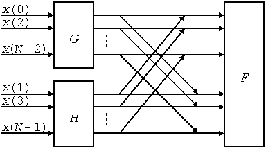
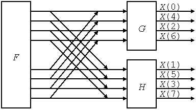

Алгоритм БПФ с прореживанием по времени с учетом симметрии поворачивающих множителей W можно описать следующими уравнениями:
| (5.1) |
где FK – БПФ исходной последовательности; GK и HK – БПФ последовательностей из четных и нечетных элементов соответственно, а
| (5.2) |
поворачивающие множители.
Суть алгоритма БПФ с прореживанием по времени заключается в разбиении входной последовательности на четные и нечетные элементы, выполнение над ними БПФ в два раза меньшей размерности и объединение полученных результатов снова в одну последовательность по формулам (5.1) (рис. 5.1).

Рисунок 5.1 – Принцип БПФ с прореживанием по времени
Выражения (5.1) описывают базовую операцию алгоритма БПФ с прореживанием по времени, которую иногда называют «бабочкой» из-за ее графической интерпретации.
Поскольку процессор TMS320VC5402 не имеет команд для работы с комплексными числами, то действительная и мнимая части комплексного числа хранятся в паре соседних ячеек памяти, и все операции с ними выполняются отдельно. С учетом раздельного выполнения операций над действительной и мнимой частями двух элементов «бабочки» (переменные P и Q) алгоритм вычисления «бабочки» для БПФ с замещением и прореживанием по времени можно записать в следующем виде:
Qm+1 = Pm – Qm×WNk,
Pm+1 = PR + j×PI + (QR + j×QI)×[cos(x) – j×sin(x)] =
= PR + j×PI + [QR×cos(x) + QI×sin(x)] + j×[QI×cos(x) – QR×sin(x)] =
= [PR + QR×cos(x) + QI×sin(x)] + j×[PI +QI×cos(x) – QR×sin(x)];
Qm+1 = PR + j×PI – (QR + j×QI)×[cos(x) – j×sin(x)] =
= PR + j×PI – [QR×cos(x) + QI×sin(x)] – j×[QI×cos(x) – QR×sin(x)] =
= [PR – QR×cos(x) – QI×sin(x)] + j×[PI –QI×cos(x) + QR×sin(x)].
Алгоритм БПФ с прореживанием по частоте описывается следующими уравнениями:
| (5.3) |
Суть БПФ с прореживанием по частоте заключается в разбиении входной последовательности на две по формулам (5.3) и выполнении над ними БПФ в два раза меньшей размерности, что можно проиллюстрировать рисунком (для 8-точечного БПФ) (рис. 5.2).

Рисунок 5.2 – Принцип БПФ с прореживанием по частоте
Выражения (5.3) описывают базовую операцию алгоритма БПФ с прореживанием по частоте.
С учетом раздельного выполнения операций над действительной и мнимой частями переменных P и Q алгоритм вычисления «бабочки» для БПФ с замещением и прореживанием по частоте может быть записан следующим образом:
Qm+1 = (Pm – Qm)×WNk,
Pm+1 = PR + j×PI + QR + j×QI = [PR + QR] + j×[PI + QI];
Qm+1 = (PR + j×PI – QR – j×QI)×[cos(x) – j×sin(x)] =
= PR×cos(x) + j×PI×cos(x) – QR×cos(x) – j×QI×cos(x) –
– j×PR×sin(x) + PI×sin(x) + j×QR×sin(x) – QI×sin(x) =
= [(PR – QR)×cos(x) + (PI – QI)×sin(x)] + j×(PI –QI)×cos(x) – (PR – QR)×sin(x)].
Ниже в качестве примера приводятся фрагменты программ с использованием прямой адресацией для вычисления «бабочки» в алгоритмах БПФ с замещением и прореживанием по времени и частоте соответственно.
* DIT FFT Programm for TMS320C5402 DSP Starter Kit * Direct Addressing 12/11/09 20:20:00 .data * данные PR .word 0h ; действительная часть P PI .word 0h ; мнимая часть P QR .word 0h ; действительная часть Q QI .word 0h ; мнимая часть Q COS .word 0h ; действительная часть W SIN .word 0h ; мнимая часть W .text * инициализация INIT ld #PR, DP ; текущая страница данных ssbx sxm ; расширение знака ssbx frct ; умножение дробных чисел * «бабочка» BTRFLY ld QR, T ; T = QR mpy COS, a ; A = QR*cos ld QI, T ; T = QI mac SIN, a ; A = QR*cos+QI*sin = XR mpy COS, b ; B = QI*cos ld QR, T ; T = QR sth a, QR ; QR = a = XR mas SIN, b ; B = QI*cos-QR*sin = XI sth b, QI ; QI = b = XI ld PI, 15, a ; A = 1/2 PI add QI, 15, a ; A = 1/2 (PI+XI) sth a, PI ; PI = 1/2 new PI sub QI, 16, a ; A = 1/2 (PI-XI) sth a, QI ; QI = 1/2 new QI ld QR, 15, a ; A = 1/2 XR add PR, 15, a ; A = 1/2 (PR+XR) sth a, PR ; PR = 1/2 new PR sub QR, 16, a ; A = 1/2 (PR-XR) sth a, QR ; QR = 1/2 new QR * DIF FFT Programm for TMS320C5402 DSP Starter Kit * Direct Addressing 12/11/09 20:30:00 .data * данные PR .word 0h ; действительная часть P PI .word 0h ; мнимая часть P QR .word 0h ; действительная часть Q QI .word 0h ; мнимая часть Q COS .word 0h ; действительная часть W SIN .word 0h ; мнимая часть W .text * инициализация INIT ld #PR, DP ; текущая страница данных ssbx sxm ; расширение знака ssbx frct ; умножение дробных чисел * «бабочка» BTRFLY ld PR, 15, a ; A = 1/2 PR add QR, 15, a ; A = 1/2 (PR+QR) sth a, PR ; PR = 1/2 new PR sub QR, 16, a ; A = XR = 1/2 (PR-QR) sth a, QR ; QR = a = XR ld QI, 15, a ; A = 1/2 QI add PI, 15, a ; A = 1/2 (PI+QI) sth a, PI ; PI = 1/2 new PI sub QI, 16, a ; A = XI = 1/2 (PI-QI) sth a, QI ; QI = a = XI ld QR, T ; T = QR = 1/2 (PR-QR) mpy COS, a ; A = 1/2 (PR-QR)*cos ld QI, T ; T = QI = 1/2 (PI-QI) mac SIN, a ; A =1/2[(PR-QR)cos+(PI-QI)sin] mpy COS, b ; B = 1/2 (PI-QI)*cos ld QR, T ; T = QR = 1/2 (PR-QR) sth a, QR ; QR = 1/2 new QR mas SIN, b ; B =1/2[(PI-QI)cos-(PR-QR)sin] sth b, QI ; QI = 1/2 new QI
При вычислении «бабочки» для исключения переполнения все выходные значения делятся на два.
При реализации программ БПФ прямая адресация данных должна быть заменена на косвенную адресацию с соответствующей модификацией адреса: переход от действительной части переменной (PR или QR) к мнимой части переменной (PI или QI) и обратно выполняется с использованием адресации *ARx+ и *ARx– соответственно. Переход от действительной или мнимой части переменной P к аналогичной части переменной Q и обратно – с использованием адресации *ARx+0 и *ARx–0 соответственно. При этом подразумевается, что действительная и мнимая части каждого числа хранятся в соседних ячейках памяти (т. е. в двойном слове), а число ячеек между переменными P и Q находится в регистре AR0.
- Изучить теоретические сведения по теме лабораторной работы (подразд. 5.2).
- Получить у преподавателя задание для выполнения практической части работы.
- Согласно заданию написать, оттранслировать и выполнить программу.
- Продемонстрировать результат трансляции и работы программы преподавателю.
- Оформить и защитить отчет по лабораторной работе.
- Цель работы и исходные данные.
- Описание алгоритма работы программы.
- Листинг программы с комментариями.
- Выводы по работе.